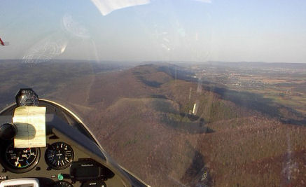
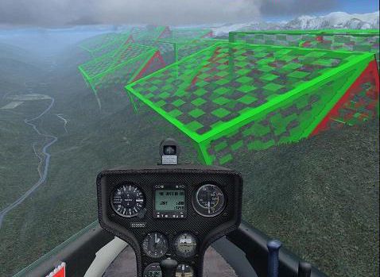
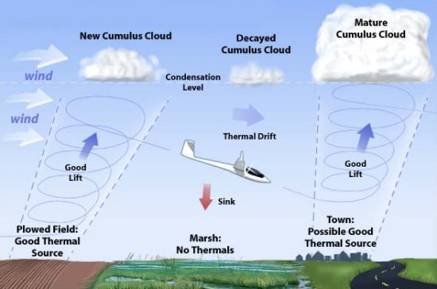
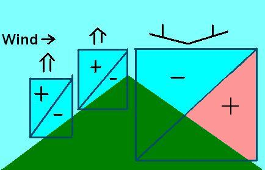
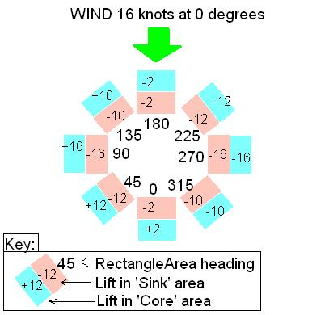
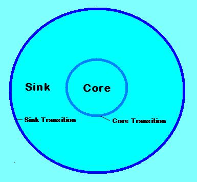

Soaring with FSX >> Lift
The simplest lift is ridge lift, where the wind blows against a slope and is forced upwards. Gliders (and birds) can fly in the area of updraft and stay aloft for hundreds of miles. The great thing about ridge lift is if it starts somewhere near your home airfield you can fly along it and still get home, so long as the wind doesn't quit. The following pictures illustrate the ridge lift area adjacent to the ridge, and a photograph taken from a real glider ridge soaring.
|
 |
FSX has great tools for the creation of ridge lift in the mission editor, so you can design ridgelift boxes working in a very realistic way. Here's a screenshot within the Mission Editor using a development visualisation model:
|  |
Thermals are a little more subtle. The sun heats the ground, warms the air, which collects into a bubble and rises in a column. The left picture gives you the overview, while the right is an FSX screenshot with the 'spiral' visual model enabled:
|  |  |
It is a source of frustration for real glider pilots (well, me anyway) that lift in FSX is usually so strong that every thermal would be in the Guinness Book of World Records. The default FSX thermal is 10+ knots to maybe 24,000 feet, and half-a-mile in diameter. Frankly, you could fly a surfboard in that kind of weather.
Here's a list of rules to make your thermals and ridge lift move realistic:
Only one type of area definition is supported, RectangleArea, which
defines a 3D box. The edges of the box will not appear when the mission is being played.
An Area Definition object contains the following properties:
| Property | Description from the SDK | Comments | ||||||
| id | Reserved. Do not edit this field. | |||||||
| Descr | The name of the object. The system will generate a name such as RectangleArea1, simply by appending the number of the next object to the type of the object. This name can be edited to help identify it further. Make sure though that the name is unique. | e.g.: area_therm_001a area_ridge_003b |
||||||
| InstanceId | This is the GUID generated to ensure the object has a unique reference. Do not edit this field | |||||||
| Length | Length of the box in meters. | if the orientation of the box is 0,0,0 (i.e. heading zero), length runs east-west | ||||||
| Width | Width of the box in meters. | if the orientation of the box is 0,0,0 (i.e. heading zero), width runs north-south | ||||||
| Height | Height of the box in meters. | Height is the vertical extent of the box | ||||||
| Orientation | Heading, Pitch and Bank, or orientations about the three axis, in degrees. | SDK is confusing. Actually order is pitch, bank, heading Heading is the most important setting for a RectangleArea containing RidgeLift. The comparison of the heading of the RectangleArea with the bearing of the wind gives the factor to be applied to the prevailing wind to calculate the lift (or sink) affecting the aircraft. The RectangleArea should be aligned with the slope of the adjacent ground. For a south-facing slope this means a RectangleArea heading of 0. For a west-facing slope, the RectangleArea would have a heading of 90. |
||||||
| AttachedWorldPosition |
|
AltitudeIsAgl generally True for thermals and ridge lift. WorldPosition altitude positive for thermals (thermal lift starts at 200m AGL). WorldPosition altitude often negative for ridgelift to position the box correctly. Editing this within the Object Placement tool is not intuitive. See here for how to edit. |
||||||
| AttachedWorldObject | An optional Attached World object. This enables the area definition to be attached to a moving object. Leave the AttachedWorldPosition blank in this case. | not applicable for thermals or ridge lift |
A RidgeLift object is used to simulate the effect of a hill slope on the wind.
The image in the Mission SDK looks like this:

| Property | Description from the SDK | Comments | ||||||
| id | Reserved. Do not edit this field. | |||||||
| Descr | The name of the action. The system will generate a name such as RidgeLift1, simply by appending the number of the next action to the type of action. This name can be edited to help identifiy it further. Make sure though that the name is unique. | e.g.: ridge_001a ridge_001b You can use the last letter or something like it to refer to different elements of a multi-box ridgelift area. |
||||||
| InstanceId | This is the GUID generated to ensure the object has a unique reference. Do not edit this field | |||||||
| Activated | Set to True or False. This can be changed during a mission using the Object Activation action. | Generally True for RidgeLift. Object activation presents possibilities for thermals though. | ||||||
| ObjectReference | A reference to an AreaDefinition object that defines a box that is the bounding area of the ridge lift. It is very important that the heading setting of the AreaDefinition points in the same direction as the slope (to the left in the above diagram). | |||||||
| AirObjectModelGuid | An optional model GUID. The model will be rendered within the ridge lift box. |
During development, you can use the GUIDs for the ridgebox
(this must be installed first). Length x width x height in 000's meters:
|
||||||
| ScaleModel | Set to True to if the model should be scaled to match the size of the ridge lift box. Set to False to render the model to its own scale. | As of early 2007 there are bugs in FSX scaling. If you want to use a visual model to aid development, use False and set the RectangleArea to the same size as an available ridgebox (see above). | ||||||
| CoreRateScalar | A scalar value that is applied to the wind in the Core area of the ridge lift. A positive value will provide an updraft, a negative value a downdraft. Typically a positive value such as 0.5 would be entered here. So if the wind speed was 8 m/s, an updraft of 4 m/s would be applied. | Set to 0.5 (or 0.8) if you create a wind in the mission of 16 knots at 45 degrees clockwise from the optimal direction for the slope (see below). E.g. for a south-facing slope (RectangleArea heading=0) set the wind to 225 degrees (i.e. from the South-West). After you get the ridgelift working, you can play about with the wind strength, direction, and the CoreRateScalar value. | ||||||
| CoreTurbulence | A variation scalar that is applied to the wind speed. For example, if a value of 0.1 is entered, and the wind speed is 8 m/s, the wind speed in the ridge lift Core area will be randomly varying between 7.2 and 8.8 m/s. | Try 0 at first until you know the lift is working as you expect it. | ||||||
| SinkRateScalar | A scalar value that is applied to the wind in the Sink area of the ridge lift. A positive value will provide an updraft, a negative value a downdraft. Typically a negative value such as 0.5 would be entered here. So if the wind speed was 8 m/s, an downdraft of 4 m/s would be applied. | As of early 2007 the SDK document appears to be wrong. A positive SinkRateScalar generates Sink (and a negative SinkRateScalar generates Lift in this area). | ||||||
| SinkTurbulence | A variation scalar that is applied to the wind speed. For example, if a value of 0.1 is entered, and the wind speed is 8 m/s, the wind speed in the ridge lift Sink area will be randomly varying between 7.2 and 8.8 m/s. | Try 0 at first until you know the lift is working as you expect it. |
The simplest way to place ridgelift is to place the center over the apex of the ridge. The stock AustrianSoaring mission uses this technique:

More detailed control can be achieved using negative values for SinkRateScalar for lift in the entire box, and a similar technique to have the entire box produce sink on the leeward side:
It is crucial that you understand the correct alignment of the RectangleArea with the ridge and the wind.

The image below shows ridgelift placed on the north-facing slopes at Zell am See airfield in Austria (ICAO code LOWZ).
The ridge areas in this example are all 1000 meters high, 4000 meters long (East-West), and 2000 meters wide (North-South). The ridge areas all have a heading of 180, and on the lower slopes have been tilted upwards about 30 degrees (i.e. orientation 330,0,180). A ridgebox scenery object (see below) has been used to illustrate the position of the boxes. Note that the lower ridgeboxes have negative SinkRateScalar values (-0.8), which with the positive CoreRateScalar values (+0.8) ensures the lower boxes entirely contain lift. The wind in the mission is set to 16 knots from 45 degrees, i.e. 45 degrees clockwise from the expected optimal to mitigate a current FSX bug.


This download contains a BGL library of ridgebox scenery objects that, once installed in an active scenery folder, can be used to render FSX ridgeboxes visible. The zip contains README.txt which gives full installation instructions and lists the GUIDs.
Download the RidgeBox source here
This download contains a simple mission (with no waypoints or goal!) purely to allow you to slew and fly around a series of ridgeboxes to gain a better understanding of the way ridgelift in FSX works. If you check the 'allow changes' checkbox on the FSX missions page before loading the mission, you can change the wind strength and direction and see the effect. This mission was used to calibrate the charts above.
Download the RidgeTest mission source here
A thermal object can be used to simulate atmospheric effects, including thermals and downdrafts. Refer also to the Weather Systems documentation.
|  |
| Property | Description |
| id | Reserved. Do not edit this field. |
| Descr | The name of the action. The system will generate a name such as Thermal1, simply by appending the number of the next action to the type of action. This name can be edited to help identifiy it further. Make sure though that the name is unique. |
| InstanceId | This is the GUID generated to ensure the object has a unique reference. Do not edit this field |
| Activated |
Set to True or False. This can be changed during a mission using the Object Activation action. |
| ObjectReference |
A reference to an AreaDefinition object that defines a box that is the bounding area of the thermal. Note that this box defines the position of the thermal, including its starting height above the ground, and the height of the thermal. |
| AirObjectModelGuid | An optional model GUID. The model will be rendered within the thermal box. |
| ScaleModel | Set to True to if the model should be scaled to match the size of the thermal box. Set to False to render the model to its own scale. |
| SinkTransitionSize | The width in meters of the transition layer between the Sink and the atmosphere outside of the thermal. Half of the width of this transition will be outside the radius of the Sink layer, and half within. |
| SinkLayerSize | The width in meters of the Sink layer. |
| CoreTransitionSize | The width in meters of the transition layer between the Core and the Sink of the thermal. Half of the width of this transition will be outside the Core, and half within. |
| CoreSize | The radius in meters of the Core of the thermal. |
| BaseHeight | The size of the transition layer, in meters, at the base of the thermal. The default is 50m. This is not the height of the thermal above the ground. |
| TopHeight | The size of the transition layer, in meters, at the top of the thermal. The default is 50m. This is not the height of the thermal. |
| SinkRate | The lift value, in meters per second, within the Sink layer. A positive value will provide an updraft, a negative value a downdraft. |
| SinkTurbulence | A variation in meters per second that is applied to the SinkRate. For example, if a value of 1.5 is entered, and the SinkRate is -3 m/s, the actual sink rate applied will be randomly varying between -1.5 m/s and -4.5 m/s. |
| CoreRate | The lift value, in meters per second, within the Core layer. A positive value will provide an updraft, a negative value a downdraft. |
| CoreTurbulence | A variation in meters per second that is applied to the CoreRate. For example, if a value of 1.5 is entered, and the CoreRate is 5 m/s, the actual core rate applied will be randomly varying between 3.5 m/s and 6.5 m/s. |